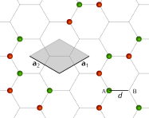
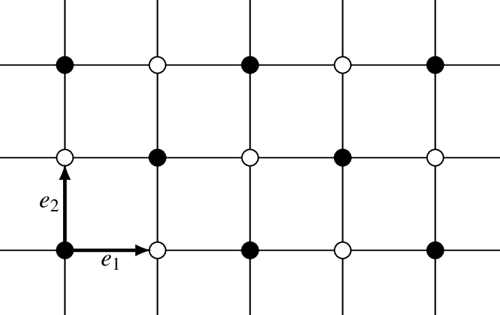

Examples¶
Minimal Supercell¶
A Bravais lattice is a discrete collection of infinite points all related by a set of discrete translations follow a pattern. For instance, in two dimensions this means that a lattices is the collections of points \(R(n_1,n_2)\) that satisfies the following equation
where \({\mathbf{a}_1}\) and \({\mathbf{a}_2}\) two noncollinear two-dimensional vectors known as the lattice vectors. An example of a lattice is presented below:
{kind=link}
Unit cell¶
For convenience, let us group the lattice vectors as columns in a \(2\times2\) matrix
The determinant of matrix \(A\) describes the area of the plane formed by the lattice vectors, and within this area there is a collection of points. This collection of points is known as unit cell, and represent a possible subset of points that can be translate with these unit vectors that fully represents the lattice. We will call the matrix \(A\) unit cell matrix.
Van der Waal cells¶
Let us consider know, another lattice B, represent by the unit cell matrix
for instance, this could be a lattice with a different symmetry such a the square Lattice.
{kind=link}
If we stack these two lattices together, a new lattice may form, but its not guarantee since the lattice can be incomesurate, meaning that the ratio of their periods along any given direction in space is not an integer and therefore the entire collection of points won’t repite periodically.
Let us work under the assumption the are commesurate. Therefore, there exist two transformation \(T_A\) and \(T_B\) that will generate the same set of points of the super cell \(R_{sc}\), i.e
where
just discrete linear transformations. Its clear that if \(A\) describe the points of a bravai lattice, a linear combination of the lattice vectors \(T_A A\) will describe another allowed unit cell. The role of equation (1) is two transform the two initial unit cell represents into a new common cell.
The problem¶
For two arbitrary sets lattice vector sets \(A\) and \(B\), find the set of 8 integers \(I:=(i_A,i_A,j_A,J_B,k_B,k_B,l_A,l_B)\) that satisfy
with minium \(|det(T_A A)|>0\).
Optimal Fermi Contour¶
Another interesting approach for the evolutionary strategy is to efficiently sample a Fermi Contour. The Brillouin zone is the momentum-space equivalent of a Bravais lattice, where the allowed momentums satisfies:
where \(N_1\) and \(N_2\) the number of unit cells contained in your crystal , and the reciprocal lattice vector are defined as the solution of the following equation
Let us now consider that the Hamiltonian matrix in the momentum space is given by the following expression
where \(f(k) = {\rm e}^{k\textbf{k}\cdot \textbf{a}_1}+ {\rm e}^{k\textbf{k}\cdot \textbf{a}_2}+ 1\) and \(f^*(\textbf{k})\) represents its complex conjugate
An important quantity for many application is to find the set of \(k_F{\rm s}\) that satisfy the following constrain
where \(E_F\) the Fermi level of the system, where \(\mathbb{I}\) the identity matrix, eigval a function that compute the eigenvalues of the system and the set \(\{k_F\}\) the so-called Fermi momentum.
The problem¶
For a given system size \((N_1,N_2)\) (typicall above 1000 ), look for the set of \((n_1,n_2)\) with \(n_1=0,\dots, N_1\) and \(n_2=0,\dots, N_2\) that satisfies: